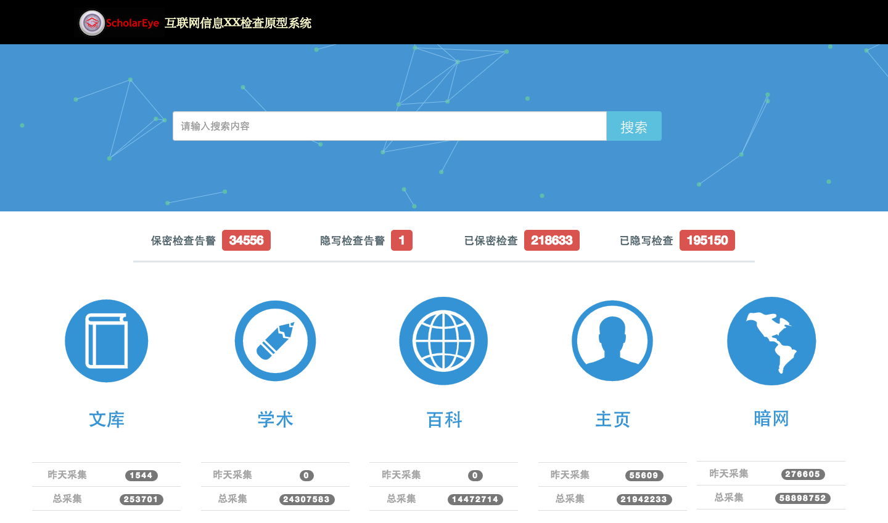
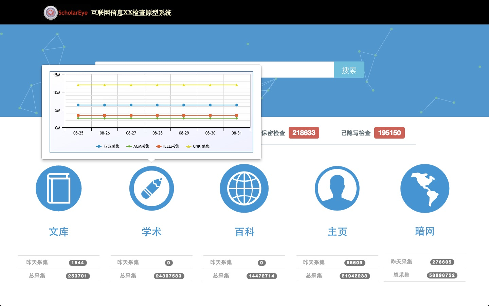
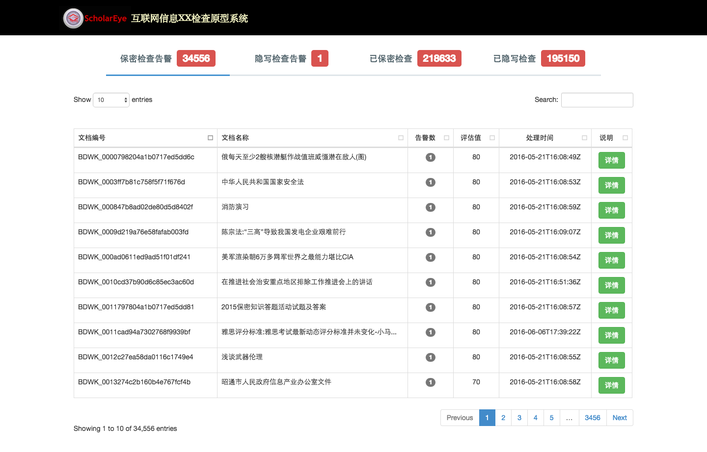
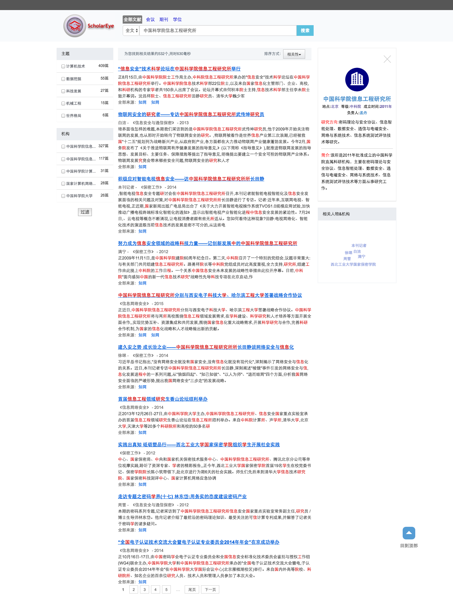
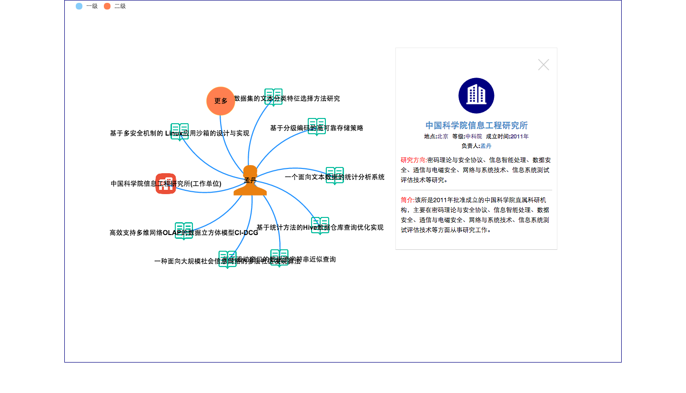
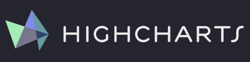
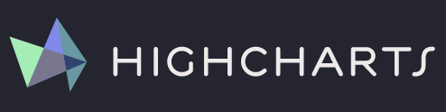
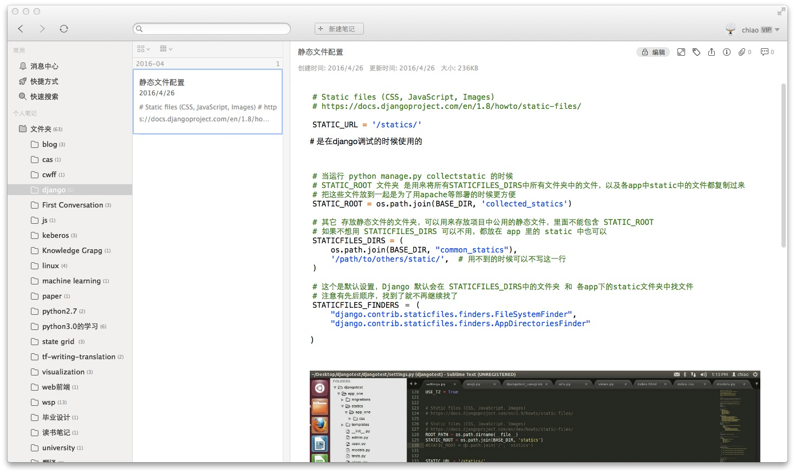
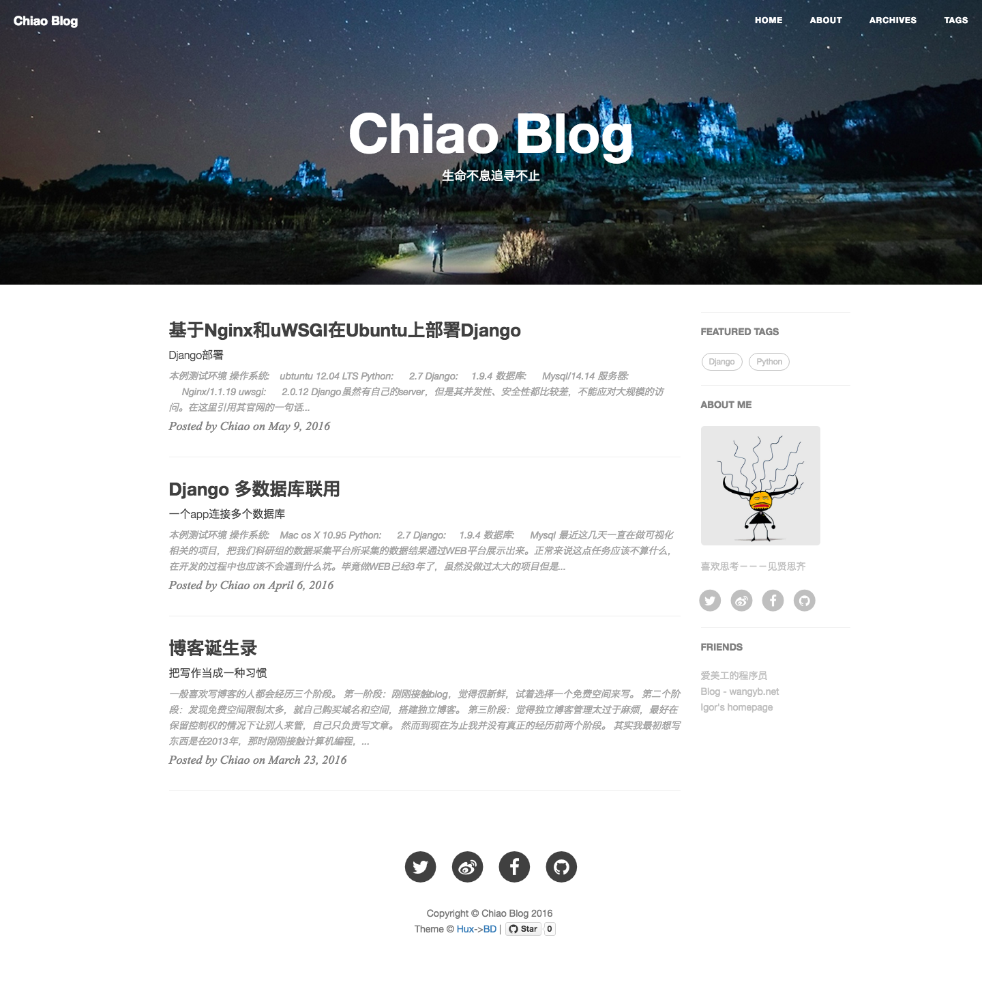

工作和学习总结与计划
(2016.01-2016.8)
Created by Zhao Chang / ChiaoGeek
前期工作
主要负责小组内项目的可视化开发任务
《互联网信息XX检查原型系统》
系统首页
数据抓取量实时展示界面
各检查结果展示界面
搜索结果展示界面
实体关系展示界面
系统所用到的环境和开发语言
服务器后端


系统所用到的环境和开发语言
客户端


 


近期工作
近期主要是在对可视化分析领域进行调研
论文阅读
- 《Declarative Language Design for Interactive Visualization》
- 《D3: Data-Driven Documents》
- 《Energy-Based Hierarchical Edge Clustering of Graphs》
- 《大数据可视分析综述》
源码阅读
- 百度数据可视化分析库echarts源码阅读
- Jquery库源码阅读
- D3可视化库源码阅读
技术学习
- Javascript模块化开发
- 可缩放矢量图形的绘制
- 组件化开发和虚拟DOM开发的前端框架－react
未来计划
开发一套灵活且高效的可视化分析系统
灵活来自于使用最基础的绘图工具，不受其他可视化库的限制，根据系统业务逻辑定制可视化分析系统

高效来自于基于虚拟DOM进行开发。

学习感悟
学习和工作的过程中需要多积累多思考。
在学习的过程中需要及时做笔记
及时用文字记录自己的思想
快速Get一门技能
如果对于一件事情你不能理解，那么你就试着去接受！
有时候程序员需要有黑匣子思想！